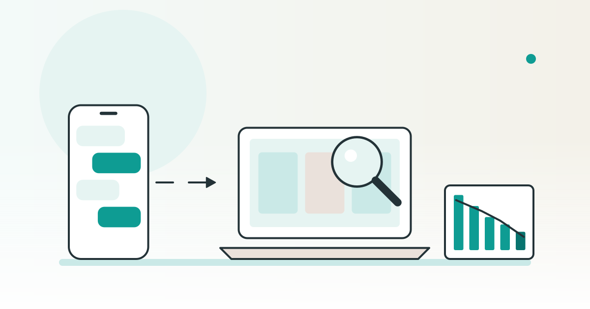

SHOPKIT コラム
BASEのショップで売れない理由と最初に直すこと｜開いた後の見直し方

BASEでお店を開いたのに注文が入らないとき、機能を足す前に、案内したリンクから商品を選ぶまでをたどってみましょう。来店の記録、写真と説明、購入条件を照らし、どこを直すかを決めるための記事です。BASEの個別機能の設定手順ではなく、自分のお店を点検し、公式ヘルプで調べる問いを整理します。
この記事は、完成品のネットショップを販売している SHOPKIT が書いています。
BASEで売れない理由は、入口と商品ページのつながりから探す
最初の作業は、普段お客様へ案内しているリンクを、自分のスマートフォンで開くことです。お店の名前で探し直すのではなく、実際に投稿やプロフィールへ載せたリンクを使います。案内した商品へ着くか、写真の品物を見つけられるか、購入条件を読めるかを確かめましょう。
たとえば投稿ではブラウスを紹介しているのに、リンク先では別の服が先に並んでいるなら、紹介した品物がどれか迷う余地があります。商品を替える前に、投稿の案内とリンク先の見え方をそろえる案を考えます。これは原因の断定ではなく、直す箇所を見つけるための点検です。
| 見えたこと | 手元で照らす物 | 次に確かめる問い |
|---|---|---|
| 紹介した品物が見つけにくい | 投稿の写真・説明とリンク先 | 案内した商品まで迷わずたどれるか |
| 来店の様子が分からない | 手元で見られる記録と、その集計対象 | 何を数えた記録か、対象期間はどこか |
| 見られた記録はあるが注文がない | 対象の商品ページと購入条件 | サイズ・同梱内容・送料・届ける時期が読めるか |
記録を取れていない欄は「不明」と残します。閲覧数が分からないことを、誰も来ていないという結論に置き換えないようにします。また、見られた記録があっても、その人がどこで購入をやめたかまでは、その記録だけで決めません。
関連：ネットショップが売れない原因は？開いて3か月で見直す順番
設定名を探す前に、公式ヘルプで確かめる質問を書く
BASEについて調べるときは、BASEの公式ヘルプを確認先にします。先に、困っていることを「どのページで、どう見えて、どうしたいか」の文にすると、調べたい内容を絞れます。この記事では、特定の機能が使えることや、その操作名は示しません。
- 「集客を増やしたい」だけで終えず、「投稿で紹介した商品を、案内したリンクから見つけやすくしたい」と書く。
- 記録の数字については、「この数は何を数え、自分の確認も含むか、どの期間の値か」を質問にする。
- 表示を変えたいときは、「対象のページ、使っている端末、現在の見え方、希望する見え方」をメモする。
- 調べた説明が自分の契約や設定にも当てはまるかを確かめ、分からなければ公式の窓口へ問い合わせる。
調べた結果は、ページの題・URL・確認日と一緒に残しましょう。「機能があるか」と「今のお店で使えるか」は別々に確認します。使えると確かめる前に、追加機能を前提とした改善計画を作らないようにします。
写真と説明を、投稿で伝えた品物にそろえる
商品ページでは、写真に写る物と実際に届ける物を照らします。服と小物を一緒に撮っているなら、どこまでが販売する品物かを文章でも示す案を考えます。サイズを選ぶ品物なら、選ぶために必要な寸法が読めるかも確かめます。
説明の読み直しでは、次のように具体的な問いを置くと、足す情報を選びやすくなります。服なら「手持ちの服と寸法を比べられるか」、雑貨なら「置く場所に収まるか、付属品は何か」です。手元の商品や仕入れ先の資料で確かめた内容を書き、分からない性質を想像で足さないようにしましょう。
「BASEでは売れないものは何か」と考える前に、自分の商品のどこが伝わっていないかを見ます。この点検だけで、ジャンル全体が売れるかどうかの結論は出せません。写真を直すか、説明を補うか、案内する相手を見直すかを、確認した不足に合わせて選びます。
関連：ネットショップの商品写真の撮り方｜一覧でそろって見える条件と使えない画像
案内する入口は、届けたい相手と商品を決めてから増やす
売り場を点検したら、誰にどの商品を案内するかを決めます。「新商品です」だけの案内よりも、使う場面やサイズの確かめ方など、その品物を選ぶ人へ伝えたい内容を書き出してみましょう。案内文と商品ページで、同じ品物の同じ特徴を説明しているかを照らします。
入口を増やすときは、どこで案内したか、どの商品へつないだか、案内した日を残します。手元で来店や注文の記録を見られるなら、同じ期間で並べます。記録の対象が違う数字を、そのまま効果の大小として比べないようにします。
写真・価格・説明・案内先をまとめて変えると、後で何を変えたかを追いにくくなります。最初は、リンク先を確かめる、寸法を補うなど、直す理由を説明できる箇所から取り組む案が考えられます。変更後に注文が入っても、その変更だけが理由だったとは決めません。
関連：ネットショップの集客をインスタで始める｜投稿の考え方とPR表示の決まり
購入条件とお店の連絡先を、商品ページから読み直す
案内する前に、買う人が送料や届ける時期、返品の条件を確かめられるかも点検します。自分が場所を知っているだけで終えず、商品を見つけたところから、必要な情報へたどってみましょう。
消費者庁の特定商取引法ガイド「通信販売」は、広告で伝える事項として、商品の価格と送料、いつ・どの方法で支払うか、商品を渡す時期などを挙げています。販売する事業者の名前・所在地・電話番号も、その表示事項に含まれます。
同じガイドには、返品についての特約を設けた場合、返品できるかどうか、受け付ける条件や期間、返す際の費用を誰が負担するかを表示する説明があります。表示事項の一部を省略できる仕組みにも条件があるため、自分の判断だけで項目を削らず、公式資料と相談窓口で確かめてください。
問い合わせへの対応を整える際は、公開した連絡先が現在も使えるかを見直します。商品ページの説明とお店の案内で、送料や発送の説明が食い違っていないかも照らしましょう。これらを整えることは、売れる理由の証明ではなく、購入条件を正確に伝えるための作業です。
完成品のお店を選ぶ場合も、販売後の点検は続ける
お店を一から作るか、完成品を選ぶかを考える場合も、作って受け取る部分と、販売開始後に自分で見直す部分を分けて確かめます。いま困っていることが写真の準備なのか、商品の説明なのか、お店を知ってもらうことなのかを、先に整理しておきましょう。
SHOPKITのサービスページでは、お店一式に加えて、仕入れの情報、運営マニュアル、集客マニュアルをお渡しすると案内しています。販売商品と店舗の準備を整え、お引き渡し後に販売を始められる状態でお渡しするという説明です（2026年10月15日時点）。詳しくはお届けするものをご覧ください。
受け取る物の説明と、誰に何を案内するかという自分の計画を照らしてから、始め方を考えましょう。お店の準備が整うことと、購入される理由が分かることは、分けて見ておきます。
よくある質問
BASEのショップで注文が入らないとき、先に機能を足すべきですか？
先に、案内したリンクと商品ページ、購入条件を点検する案を紹介しています。機能を使えるか、今の設定に合うかは、公式ヘルプや窓口で個別に確かめましょう。
閲覧数が分からないときは、お店に誰も来ていないと考えてよいですか？
記録を取れていない欄は「不明」と残します。何を数える記録か、対象期間はどこかを確認してから、来店について考えます。
注文が入らないときは、扱う商品の種類を替えたほうがよいですか？
注文がないことだけで商品の種類を替える結論にはしません。案内した品物を見つけられるか、写真と説明で選ぶための情報が伝わるかを先に点検します。
※ SHOPKITのお届けするものに関する記載は、2026年10月15日時点のサービスページに基づきます。公的資料は2026年10月28日に確認しました。BASEの個別機能や利用条件は、公式ヘルプ・窓口でご確認ください。